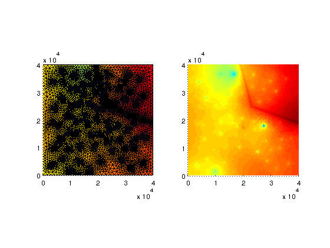
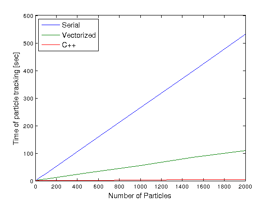

Comparison of particle tracking modes
| main | Tutorials | Functions | website |
This tutorial shows how to run the particle tracking function under different modes. In particular we will compare the computational times on the same problem between the three different available particle tracking modes 1) Serial mode using Matlab functions, 2) Vectorized mode using Matlab function 3) Serial mode using C/C++ functions.
For this example we have already prepared the required data for the flow field. The flow domain is a rectangular aquifer with dimensions 40 km x 40 km which has been discretized into 554000 elements and 20 layers
load Data4Part_exmpl1
The following plots show the triangulation of the domain and the water table. It can be seen that there are many wells ~40 and a stream segment wich recharges the aquifer
subplot(1,2,1);trisurf(TR,XY(:,1),XY(:,2),H(:,1)); view(0,90);axis equal; axis([0 40000 0 40000]); subplot(1,2,2);trisurf(TR,XY(:,1),XY(:,2),H(:,1),'edgecolor','none'); view(0,90);axis equal; axis([0 40000 0 40000]);
The data are already prepared in the format suitable for particle tracking. However we need to modify the hydraulic conductivity. Note that Kx is a matrix (Nnd x 1), where Nnd is the number of mesh nodes. This means that Kx is defined on the nodes. We want to use an anisotropy ratio Kx/Kz = 10 and 25% porosity, therefore we create the following variables.
K{1,1}=Kx;
K{2,1}=Kx/10;
por = 0.25;
For this example we want to generate the particle positions so that their trajectories are somewhat similar. Therefore we will generate particles from the subdomain which is enclosed by the following coordinates:
partdomX=[2500 7500]; partdomY=[2500 37500]; partdomZ=[-100 -150];
Next we will define the number of particles we want to generate. Note that if you run all the cases this simulation will take few hours because of the large run time of the serial Matlab implementation. You can change the Ncase parameter to specify how many scenarios you want to run (e.g. 4-5 is ok. Choose larger number if you dont need your pc for few hours but not greater than 10)
Nprt=[1 5 10 50 100 250 500 1000 1500 2000]; Ncases = 10;
For the particle tracking we need an option structure, which can be initialized as (while the cursor is on the part_options press F1 to get help about the available options)
part_opt = part_options
We will keep the default values in this example and change only the mode to 'serial' 'vect' and 'cpp' to run the serial, vectorized and the c++ serial mode of particle tracking. Also we set freqplot a large value to surpress the output.
part_opt.freqplot = 1000;
part_opt =
Knodes: 1
Nal: 1000
search: 50
bed_corr: 0
ploton: 0
step: 5
minstep: 5
errmin: 0.0100
errmax: 0.1000
method: 'RK45'
pornodes: -1
Ngen: 15
maxstep: 0.5000
stall_times: 100
freqplot: 10
mode: 'vect'
el_type: 1
The following is the core of this tutorial. Every loop we will generate a different number of particles and call the particle tracking function under different modes and keep a record of computational time for each mode. The main point here is that in all three modes the code to run the particle tracking is identical
for k=1:Ncases xp=partdomX(1)+(partdomX(2)-partdomX(1))*rand(Nprt(k),1); yp=partdomY(1)+(partdomY(2)-partdomY(1))*rand(Nprt(k),1); zp=partdomZ(1)+(partdomZ(2)-partdomZ(1))*rand(Nprt(k),1); part_opt.mode = 'serial'; tic; [XYZ Vxyz exitflag]=ParticleTracking_main([xp yp zp],XY,Z,TR,TRB,H,K,por,part_opt); times(k,1)=toc; part_opt.mode = 'vect'; tic; [XYZ Vxyz exitflag]=ParticleTracking_main([xp yp zp],XY,Z,TR,TRB,H,K,por,part_opt); times(k,2)=toc; part_opt.mode = 'cpp'; tic; [XYZ Vxyz exitflag]=ParticleTracking_main([xp yp zp],XY,Z,TR,TRB,H,K,por,part_opt); times(k,3)=toc; end
Finally we will show the results on the following plot
clf; plot(Nprt(1:Ncases),times, 'linewidth',1.5) xlabel('Number of Particles','fontsize',12) ylabel('Time of particle tracking [sec]','fontsize',12) hh=legend('Serial','Vectorized','C++'); set(hh,'Location','NorthWest','fontsize',12)
Obviously the c++ implementation is the fastest. Indeed this is the option we typically choose. However the other modes can be usefull if one want to get an insight of the particle tracking flow field for example